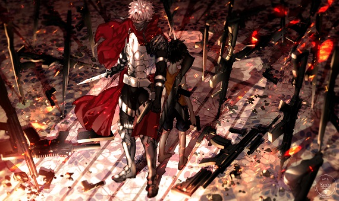

衛宮切嗣為fate zero 的男主角
被外界稱為「魔術師殺手」。覺得魔術與機械一樣，只是一種達成目標的手段。深愛著自己的妻子愛麗絲與自己女兒伊莉雅、在第四次聖杯之戰前九年被愛因茲貝倫收為女婿。對於招出Saber感到不滿，相比以騎士道自居的騎士，他更喜歡暗中行動的Caster或Assassin。
自幼抱有「正義的夥伴」的理想、但因為在現實不可能實現的願望而令他非常痛苦，經常因為自身理想和行動有所出入而氣憤。也因這種痛苦而令他心理變得脆弱和渴求聖杯，希望藉聖杯的奇蹟來根絕戰爭和實現持久的和平。
年少時因父親在艾明美戈島研究死徒時從而引發了滅村的悲劇，事後為避免相同的事情再發生而親手弒父。此後開始以「犧牲少數以拯救多數」為信條，在一次任務中以此原則用對空飛彈擊落養母娜塔莉亞所乘的飛機，自身悲痛異常。
具有火與土的雙重屬性。使用武器是卡利科950、湯普森爭奪者和瓦爾特WA 2000。代表愛因茲貝倫一族出戰，為了自身堅信的正義可變得冷酷無情，對目標貫徹到底不擇手段，能使用「固有時制御」。
「固有時制御」是一種可以控制時間加快減慢的固有結界，因為在體外釋放會招致地球意志蓋亞的修正使其無效化，故而維持它需要龐大的魔力。衛宮切嗣將其改良使固有結界僅存於自身體內，規避蓋亞的修正，令他可以加快或減慢自己的時間流動以做出人類不可能做出的速度，不過反動會令身體做成傷害。「二倍速」使用結束會感到疲憊並全身劇痛，「三倍速」使用結束會血管崩裂，肌肉纖維斷裂，「四倍速」使用結束內臟破碎……等等。「四倍速」所消浩的魔力十分龐大，對身體造成的傷害也萬分的巨大，因此「四倍速」是上限了。
屬於他個人的魔術禮裝為「起源彈」，以自己的第十二對肋骨製作而成的魔彈（動畫由娜塔莉亞製作），共有66顆。切嗣在參與聖杯戰爭前已經消耗了其中的37顆，而從中並沒有浪費任何的一顆。切嗣的起源為「切斷」與「結合」，即是破壞與修復，由於被修復了，但是修復不但不是復原，而只是胡亂地連接在一起，所以擊中部位將會喪失原有的機能，魔術師以全身魔力接觸的話則會使整個魔術迴路短路，最後變得沒法使用魔術。另外，魔彈的單純攻擊力也到達裝甲車也能打穿的地步、因此極難防禦。
在聖杯戰爭終期，與言峰綺禮對決時被聖杯釋出的黑泥浸過，進入精神世界遇見具有愛麗絲菲爾形態的聖杯的意識，其後聖杯的意識讓他看見其願望的真正結果，就是抉擇出最具有價值存活的一方。衛宮切嗣表示這不是自己所願並立刻拒絕，在極度痛苦中槍殺了女兒伊莉雅，又掐死了愛麗，後強行逃脫精神世界而被聖杯詛咒。
逃離精神世界後在絕望中使用2枚令咒，強制命令Saber使用聖劍破壞被黑泥所污染的聖杯，然而卻因為Saber只破壞作為容器的小聖杯，黑泥自大聖杯的孔洞流出，破壞浸過的一切，反而造成冬木市的大火。
聖杯戰爭結束後，悔恨自己的弱小和無力，人生信條變為「能多救一個是一個」，收養了在災難中生還的衛宮士郎，並定居於冬木市中。其性格的變化讓日後的Saber形容簡直是判若兩人。雖然多次想把伊莉雅帶回，但因放棄聖杯的舉動被愛因茲貝倫家視為叛徒，無法進入愛因茲貝倫城的結界而無功而返。
而為了阻止下一次的聖杯戰爭，在地脈裏設置了破壞大聖杯術式的機關，預計會在30～40年之間發動，以在下一個60年之前終結聖杯戰爭。然而因為這次的大聖杯中所儲存的剩餘魔力比過往還多，導致下一次的聖杯戰爭在短短十年後便再度舉辦。
最後因聖杯的詛咒使身體機能日漸衰退，於聖杯戰爭結束的五年後，把「正義的夥伴」的理想交託於養子衛宮士郎，其後在養子的注目下逝世，終年三十四歲。在士郎的要求下教導了他基礎的魔術，但因為沒預料到下一次的聖杯戰爭會在短短十年後再度舉辦，所以沒對士郎說過關於這方面的事，更從來沒想到士郎未來會參加聖杯戰爭。由於不是血親，所以也沒有讓士郎繼承魔術刻印。
衛宮切嗣亦在2015年手機遊戲《Fate/Grand Order》自2016年4月27日活動「Fate/Accel Zero Order （フェイト／アクセルゼロオーダー）」起以「Assassin」的職階登場，在遊戲中被描述為某個平行世界中因成為抑止之守護者作為和在人理燒卻的特異點被抑止力召喚來的「假設」而Servant化，寶具為「花開堪折直須折」Chronos Rose和用在普通攻擊時的改做型M9刺刀「神秘轢斷」Phantasm Punishment。
